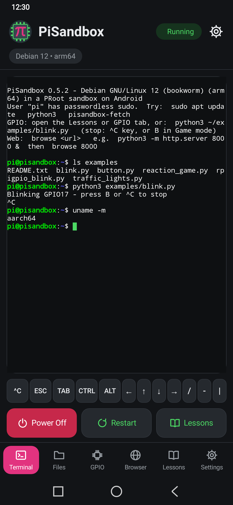
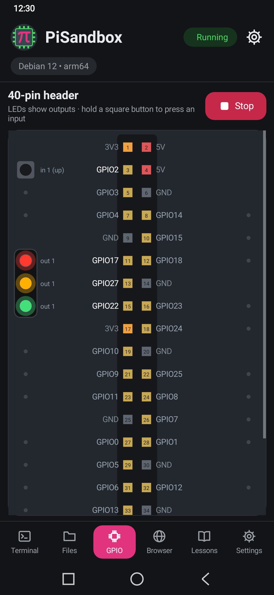
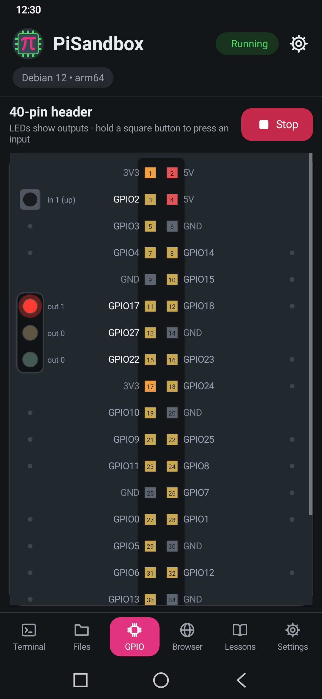
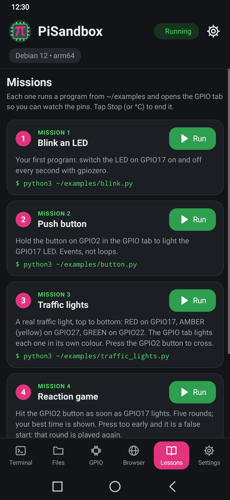
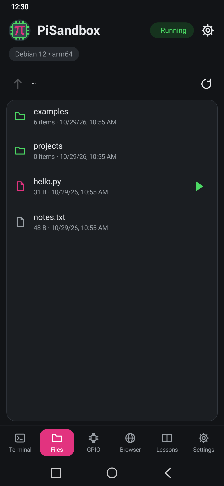
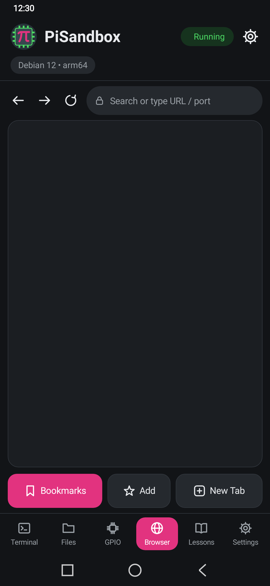

PiSandbox
A pocket Linux computer for learning to code without hardware. PiSandbox runs a real Debian 12 system with Python, apt and
sudo on your Android phone — no root, no download on first start — and simulates a 40-pin GPIO header so
classic LED and button lessons work on screen.






Download
Version 0.5.2 · Android 8.0+ · 64-bit ARM · about 600 MB free space.
Get pisandbox-0.5.2-release.apk from the latest release
and check its SHA-256. On the phone, allow your browser or file manager to install unknown apps when Android asks.
Install guide
(uninstall earlier test builds first).
Features
- Debian 12 terminal with a key row for Ctrl, Tab, arrows and Esc.
- Simulated GPIO:
RPi.GPIO,gpiozeroand thegpiocommand drive an on-screen header with coloured LEDs (traffic lights show red, amber and green) and buttons. - Step-by-step lessons, a file browser with Run, and a built-in browser for your own web servers.
- Keeps running in the background; power off from the notification.
- Soft button clicks and quiet typing sounds (switch them off or turn them down in Settings; silent when your phone is).
Privacy
PiSandbox collects no data: no accounts, analytics, ads, crash reporting or third-party SDKs. Privacy policy.
Open source
GPL-3.0-or-later. Source code, licences of bundled software (PRoot, Debian, Termux terminal and others) are listed in the app under Settings → About & licenses.
Raspberry Pi is a trademark of Raspberry Pi Ltd. PiSandbox is not affiliated with or endorsed by Raspberry Pi Ltd. Debian is a registered trademark of Software in the Public Interest, Inc.